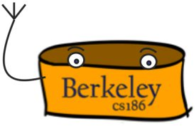
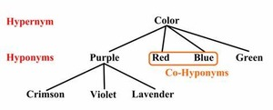
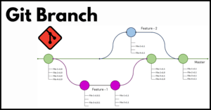
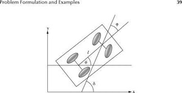
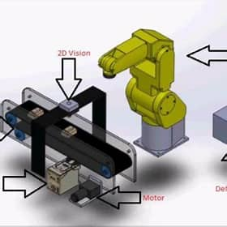
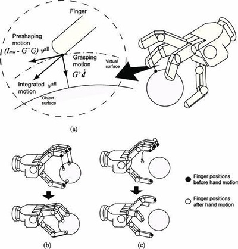

Projects
Discretized Model of a Soft Gripper
Modeled and Implemented a Discretized Model of a Soft Gripper as Infinite Links on an Open Chain Manipulator. This is Often Done Using Bezier Curves Which We Did Model, But The Novel Aspect of The Project is Modeling It With Hermite Curves and Limit Analysis. Following Theory Analysis, and Implementation The Code Was Tested On Soft Grippers to See How Practical It Was In Comparison to Our Model.
Report Here
End to End Encrypted File Sharing System
Created a File Sharing System for Users to be Created and to Securely Create, Write, Read, and Share Files With the Presence of Attackers. This Additionally Allows Users to Revoke Access Without Any Worry About the Revoked User Being Able to Read or Write to File Anymore. This Design was Planned Thoroughly Through a Design Document, and considered a Data Adversary Who can Read All Persistent Information, and A Revoked Adversary Who Does Not Have All Persistent Information But Can Save Information that They Did Get Before Their Access Was Revoked. The Design Implemented the Necessary Features of A File Sharing System While Not Allowing the Data Adversary to Read any Contents of the Files nor Finding out Any Users Passwords, and Preventing the Revoked Access Adversary From Reading Any Updates to the File They Previously Had Or Writing to That File And Was Implemented in Golang
PintOS
Designed, Programmed, and Implemented an Operating System with a team of 4, PintOS including Handling User Programs, Argument Passing, System Calls, Strict Priority Scheduling for Threads, Dealing with User Threads, Buffer Caches, and Sub Directories
Within Pintos Implemented Lists Structures for Kernels, a Functioning Shell with Operations Such As Pipelining, HTTP, and Implementing Memory Management.RookieDB
Implemented a DataBase System Including Implementing B+ Tree Indices, Join Algorithms, Query Optimizations, Concurrency with Queuing and Multigranularity Locks, and Recovery with the ARIES Recovery Algorithm. To Prepared For the Project, SQL Queries were coded up, and After the Project NoSQL entries (Using MongoDB) were Coded up.

NGordNet
A Browser Based Tool that Gives the History of the Usage of a Word Along with Keeping Track of a Wordnet that Maintains the Relationship of Hyponyms and Hypernyms. This Takes Multiple CSV Files(Information About A Word, Information About a Year, Information About Synsets, Information about the Hyponyms), Processes Them, and Builds the Necessary System to Give a Valid Output.

GitLet
A Miniaturized Local Version of Git Which Mimics Git Behavior for init, add, commit, rm, log, global-log, find, status, restore, branch, switch, rm-branch, reset, and merge. This Requires A Clean System Design (Done Through an Updated Design Document) Which Implements Persistence Along with Maintaining Contents, Along with Implementing Graph Algorithms.

Nonholonomic Control
Explained and Analyzed Path Planning Methods on a Bicycle Model. Algorithms Include: Sinusoidal Planning, Rapidly-Exploring Random Trees Planning, and Optimization Based Planning.
Following Implementation, This was Then Tested on an Obstacle Courses for All Planners Demonstrated Different Case-Scenarios One Would Use One Planner Over Another. Report Here
Visual Servoing
Analyzing the Theory of Jointspace PD Velocity Control, Jointspace PD Torque Control, and Workspace Velocity Control
Put a Jointspace PD Velocity Controller into Practice by Testing and Tuning the Gains of the Controller. As well as Testing it for a Linear Trajectory, a Circular Trajectory, and a Polygonal Trajectory Around a Tag. Report Here
Grasp Planning with Sawyers
Analyzed and Implemented Grasping Metrics Including Gravity resistance, Ferrari-Canny, and Robust force closure Following Implementation We Then Tested The Metrics For Finding the Grasp Planning on Oddly Shaped Objects With A Sawyer Robot
Following Implementation of Them, They Were Then Tested on Unicycle Model and a Quadcopter Model. Report Here
State Estimation
Analyzed and Implemented Classical State Estimation Models Including: Dead Reckoning, Kalman Filtering, and Extended Kalman Filtering. Following Implementation of Them, They Were Then Tested on Unicycle Model and a Quadcopter Model
Report Here.jpeg)